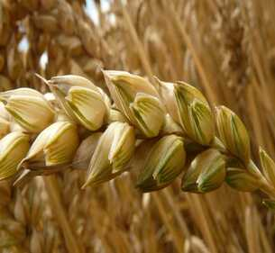
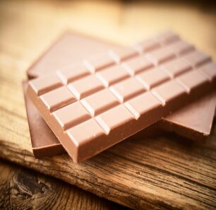
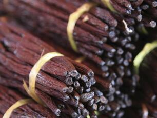

MYUKA

Un mélange unique de caramel, de vanille et de chocolat au goût irrésistible, pour te faire rugir de plaisir. Sharks, les céréales qui ont du mordant.
- Blé complet 1er ingrédient
- Blé complet local et responsable
- Sans huile de palme
- Sans colorant et sans arôme artificiel
- Vanille Bourbon de La Réunion
Depuis 1855, la société familiale Nigay est spécialisée dans la fabrication de caramels utilisés sous formes variées (liquide, pâte, poudre ou éclat) par les artisans et industries agroalimentaires....
| Energie | 773kJ/183kcal |
| Matière Grasses Dont sarurées |
4,4g 1,6g |
| Carbohydrates Dont sucres |
28,3g 13,4g |
| Fibres alimentaires | 1,8g |
| Protéine | 6,8g |
| Sel | 0,30g |
|  |  |  |
|
Le blé complet a l’avantage d’avoir conservé le germe, le son et l’amande, 3 éléments clés qui en font un aliment incontournable pour votre équilibre nutritionnel. Véritable source d’énergie aux multiples qualités nutritionnelles, il contient peu de sucres et de matière grasses. |
La Suisse fait partie des pays reconnus mondialement pour la qualité de son chocolat. En effet, les maîtres chocolatiers ont su sublimer le beurre de cacao pendant des décennies, et ont imposé la Suisse comme une référence en la matière. Entre gourmandise et savoir-faire, voici cinq marques de chocolat garanties 100% suisses, 100% excellence ! |
QU’EST-CE QUE LA VANILLE BOURBON ? |